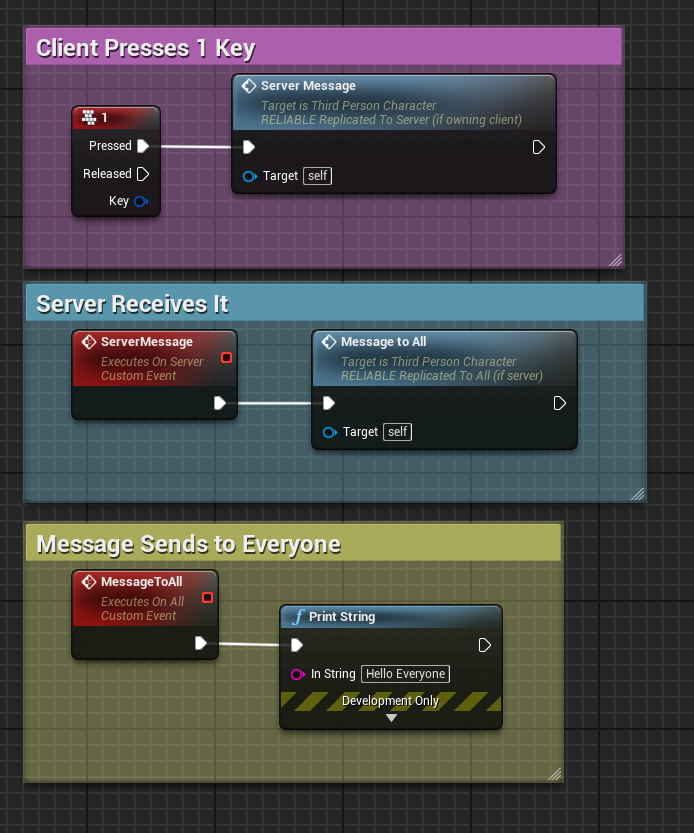
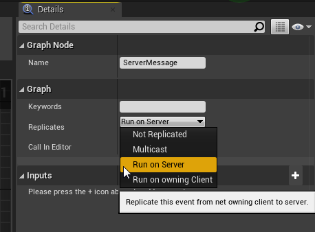

Replicating an In-Game Event
To replicate an event in game, first we need to understand the structure for how our multiplayer game will work. For the purposes of this tutorial, we will be assuming that 1 player will be our host (the server), and the other will be a client that is connected to the server.
The typical workflow that we will need to know is that the server is the heart of our game and any replicated event will need to be sent over the server so the server can then send it back to everyone else. So what this would look like would be client -> server -> everyone.
Take a look at this example:

What we have here is the client presses the 1 key on their keyboard, which is then followed by it sending a queue to the server to send a message, and then the server sends a queue to everyone to do a print string which reads "Hello Everyone".
In order to change the replication option for a custom event, you can change it in the details panel after selecting the event:

Replication Options Guide:
Not Replicated - No replication will take place, will remain client-side only.
Multicast - Replicates to everyone, however only the server has permission to execute a multicast.
Run on Server - Will execute on the server. Useful if you want an event triggered by a client to get replicated.
Run on owning Client - Will execute on the client that owns the actor. Useful if for example you have an event that runs on the server that was triggered by a client, and you want a client to have some sort of reaction, like dying for example.
**IMPORTANT NOTE**
Run on Server events can only be triggered from a client if the client owns the actor it is being triggered from. For example a client can't trigger an event to run on the server from a random object in the world that is already being controlled by the server, but something the client owns, like their character and anything attached to their character (such as the character itself, the player controller, player state, etc), can trigger events to run on the server.
A client also can't execute a multicast, or run on owning client event. Those are limited to being called by the server.
An example workflow to get an event from one client to another, say you have a client that wants to send a private message to another client, you would take a reference to the player you want to send a message to, give it to the server, and the server would then send the message to that specific player.
Proceed to the next page to learn about replicating actors!